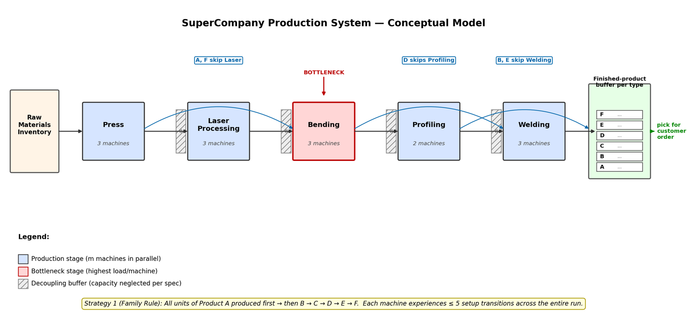

Projects / P.02 · Case study
Production Scheduling & Lot-Sizing Study
Five ways to release orders onto the same line. The one that won on throughput lost on delivery, and the simplest rule in the set beat everything on the objective.
- Context
- Simulation Modeling in Logistics Planning — M.Sc. OVGU Magdeburg, Summer Semester 2026. Individual assignment.
- Tools
- Tecnomatix Plant Simulation 2404 · SimTalk
- Brief
- Raise delivery reliability — the share of orders finished on or before the customer's required date.
The line
Six products, five stages, and each product skipping the stages it doesn't need. Profiling runs two machines where everything else has three — but at expected demand it's Bending that carries the heaviest load per machine, so that's the real constraint.


Result
| Strategy | Makespan (h) | Tardiness (h) | On-time | z = 0.8T + 0.2M |
|---|---|---|---|---|
| S1 Family rule | 37.39 | 453.23 | 67 / 100 | 1,332,235 |
| S2 EDD | 66.85 | 0.00 | 100 / 100 | 48,131 |
| S2 SPT | 67.53 | 535.89 | 75 / 100 | 1,591,990 |
| S2 LPT | 66.17 | 1,045.88 | 61 / 100 | 3,059,768 |
| S3 Lot-based (best found) | 30.04 | 162.87 | 80 / 100 | 490,694 |
Releasing every order individually costs about 30 hours of makespan whichever priority key you sort by — the line absorbs roughly 100 extra set-ups per machine instead of five. So makespan is driven by the number of set-ups, not their order. EDD spends that penalty well and buys zero tardiness; SPT and LPT spend it for nothing.


What I'd do differently
- Call the search what it is. Eleven hand-picked evaluations in a 12-dimensional space is a structured grid sweep, not a generational GA. The winner is almost certainly a local optimum; a real GA would likely improve it 5–15%.
- My pre-simulation band was wrong. I predicted 26–32 h and got 37.39 h. The lower bound held; my allowance for pipeline fill and drain was too small.
- One demand realisation is one data point. Fixed seeds make it reproducible, not robust. Replications would say whether the ordering survives a different set of 100 orders.